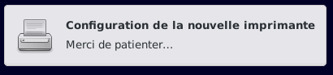
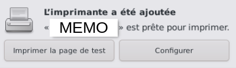
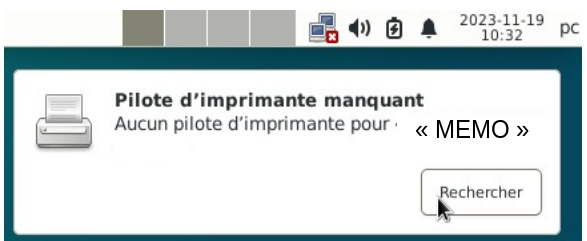

&
Détection automatique de l'imprimante : Debian et Xfce
Pour fonctionner certaines imprimantes multifonctions ont besoin de paquets supplémentaires.
Se reporter au chapitre : Imprimante



Si besoin, vérifier avec l'interface graphique de configuration la présence de l'imprimante.
Nota : Il se peut que la notification soit la suivante : « Pilote d'imprimante manquant »

Dans ce cas, la détection automatique ne fonctionnera pas. Il faudra ajouter des paquets supplémentaires.
Se référer au chapitre Imprimante pour connaître le paquet à
ajouter puis recommencer la procédure.

Informations sur le logiciel libre et Merci.
Marques déposées :
Ce site ne fait pas partie de Debian, n'est pas produit par le projet
Debian, ni approuvé par le projet Debian.
Ce site n'est pas affilié à Debian. Debian est une marque déposée appartenant
à Software in the Public Interest, Inc.
Contribuer :
Ce site ne fait pas partie de XFCE, n'est pas produit par le projet
XFCE, ni approuvé par le projet XFCE.
Ce site n'est pas affilié à XFCE.
Ce site est juste réalisé par un passionné.